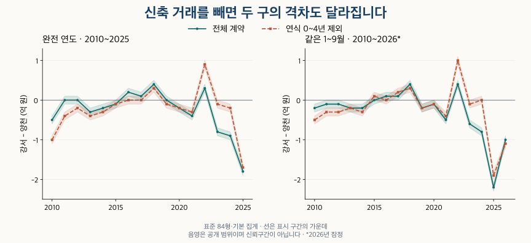

수도권 가격 지도 · 같은 연식과 개발 연대
강서·양천 아파트 가격: 연식이 같으면 차이도 같을까?
강서·양천의 84형 가격을 같은 기간과 연식으로 비교합니다. 목동·마곡의 개발·입주 연대, 신축과 거래 집중의 영향, 현재 주택 구성과 비교가 어려운 조건을 확인하세요.
분석 기간 · 2010~2025년·같은 1~9월은 2026년까지 · 끝월 잠정 | 자료 기준일 · 거래 2026-10-04 · 재고 2026-10-02
강서구와 양천구의 84형 아파트를 비교하면, 구 전체와 같은 연식의 답이 달라질 수 있습니다. 2025년 전체 거래의 중위가격은 양천이 높지만, 연식 10~19년끼리 비교하면 강서가 높습니다. 마곡과 목동의 개발 연대는 이 차이를 읽는 배경이지만, 두 구 전체의 가격 순서를 설명하는 하나의 원인은 아닙니다.
무엇을 같게 맞춘 비교인가요?
현재 단지 목록에서 강서구·양천구에 속하는 아파트 매매를 비교합니다. 84형(전용 25·26평형)은 전용면적을 평으로 환산해 반올림한 묶음으로 약 80.99㎡ 이상 87.60㎡ 미만입니다. 정확히 84㎡ 한 크기만 모은 것은 아닙니다. 별도로 84㎡ 이상 85㎡ 미만의 좁은 면적도 비교합니다.
긴 기간에 공통으로 적용하는 기본 집계는 관측된 해제·직거래 표시가 있는 계약도 포함합니다. 보조 비교에서는 해당 표시가 있는 계약을 제외합니다. 과거에 항목이 비어 있었다고 정상 거래로 확인된 것은 아닙니다. 토지임대부는 제외하고, 각 계약에 같은 비중을 준 중위가격과 25·75분위 경계를 계산했습니다.
각 지역·기간·조건에서 40계약과 10단지 이상일 때 가격을 표시합니다. 같은 연식의 양쪽 비교도 이 기준을 충족해야 합니다. 비교 유보는 가격이 같거나 거래가 없다는 뜻이 아닙니다. 10.1~10.2억 원은 10.1억 원 이상 10.2억 원 미만의 표시 구간이며, 정확한 중위가격이나 통계적 신뢰구간이 아닙니다.
2010~2025년 완전 연도와 2010~2026년 각각의 1~9월을 나눴습니다. 두 달력창은 계약이 겹치므로 독립된 관측처럼 합쳐 세지 않습니다. 2026년 9월까지의 최근 계약은 잠정이며, 이후 신고·해제로 달라질 수 있습니다.
두 구의 가격 차이는 계속 같은 방향이었나요?
2010년 전체 중위가격은 강서 3.9~4.0억 원, 양천 4.4~4.5억 원입니다. 2025년은 각각 10.1~10.2억 원과 11.9~12.0억 원입니다. 두 끝점만으로 중간의 모든 해가 같은 방향이었다고 판단할 수는 없습니다. 아래는 완전 연도별 중위가격과 차이, 두 구간이 겹치는지까지 확인한 결과입니다.
| 기간 | 강서 중위 | 양천 중위 | 강서−양천 | 강서/양천 | 방향 |
|---|---|---|---|---|---|
| 2010년 전체 | 3.9~4.0 | 4.4~4.5 | -0.6~-0.4 | 0.86~0.91 | 양천 높음 |
| 2011년 전체 | 4.0~4.1 | 4.0~4.1 | -0.1~+0.1 | 0.97~1.03 | 구간 중첩 |
| 2012년 전체 | 3.7~3.8 | 3.7~3.8 | -0.1~+0.1 | 0.97~1.03 | 구간 중첩 |
| 2013년 전체 | 3.6~3.7 | 3.9~4.0 | -0.4~-0.2 | 0.90~0.95 | 양천 높음 |
| 2014년 전체 | 3.8~3.9 | 4.0~4.1 | -0.3~-0.1 | 0.92~0.98 | 양천 높음 |
| 2015년 전체 | 4.0~4.1 | 4.1~4.2 | -0.2~+0.0 | 0.95~1.00 | 양천 높음 |
| 2016년 전체 | 4.7~4.8 | 4.5~4.6 | +0.1~+0.3 | 1.02~1.07 | 강서 높음 |
| 2017년 전체 | 5.2~5.3 | 5.1~5.2 | +0.0~+0.2 | 1.00~1.04 | 강서 높음 |
| 2018년 전체 | 5.8~5.9 | 5.4~5.5 | +0.3~+0.5 | 1.05~1.10 | 강서 높음 |
| 2019년 전체 | 7.0~7.1 | 7.0~7.1 | -0.1~+0.1 | 0.98~1.02 | 구간 중첩 |
| 2020년 전체 | 7.7~7.8 | 7.9~8.0 | -0.3~-0.1 | 0.96~0.99 | 양천 높음 |
| 2021년 전체 | 9.3~9.4 | 9.7~9.8 | -0.5~-0.3 | 0.94~0.97 | 양천 높음 |
| 2022년 전체 | 9.3~9.4 | 9.0~9.1 | +0.2~+0.4 | 1.02~1.05 | 강서 높음 |
| 2023년 전체 | 8.8~8.9 | 9.6~9.7 | -0.9~-0.7 | 0.90~0.93 | 양천 높음 |
| 2024년 전체 | 9.5~9.6 | 10.4~10.5 | -1.0~-0.8 | 0.90~0.93 | 양천 높음 |
| 2025년 전체 | 10.1~10.2 | 11.9~12.0 | -1.9~-1.7 | 0.84~0.86 | 양천 높음 |
2026년 1~9월 전체 중위가격은 강서 10.3~10.4억 원, 양천 11.3~11.4억 원입니다. 이를 전년도 전체와 바로 비교하지 않고, 아래의 같은 1~9월끼리 읽습니다. 차이와 비율은 표시 구간에서 계산한 범위이므로 끝점의 정확한 동률을 뜻하지 않습니다.
모든 연도의 같은 1~9월 비교 펼치기
| 기간 | 강서 중위 | 양천 중위 | 강서−양천 | 강서/양천 | 방향 |
|---|---|---|---|---|---|
| 2010년 1~9월 | 3.8~3.9 | 4.0~4.1 | -0.3~-0.1 | 0.92~0.98 | 양천 높음 |
| 2011년 1~9월 | 4.0~4.1 | 4.1~4.2 | -0.2~+0.0 | 0.95~1.00 | 양천 높음 |
| 2012년 1~9월 | 3.6~3.7 | 3.7~3.8 | -0.2~+0.0 | 0.94~1.00 | 양천 높음 |
| 2013년 1~9월 | 3.6~3.7 | 3.8~3.9 | -0.3~-0.1 | 0.92~0.98 | 양천 높음 |
| 2014년 1~9월 | 3.7~3.8 | 3.9~4.0 | -0.3~-0.1 | 0.92~0.98 | 양천 높음 |
| 2015년 1~9월 | 4.0~4.1 | 4.0~4.1 | -0.1~+0.1 | 0.97~1.03 | 구간 중첩 |
| 2016년 1~9월 | 4.6~4.7 | 4.5~4.6 | +0.0~+0.2 | 1.00~1.05 | 강서 높음 |
| 2017년 1~9월 | 5.1~5.2 | 5.0~5.1 | +0.0~+0.2 | 1.00~1.04 | 강서 높음 |
| 2018년 1~9월 | 5.8~5.9 | 5.4~5.5 | +0.3~+0.5 | 1.05~1.10 | 강서 높음 |
| 2019년 1~9월 | 6.6~6.7 | 6.8~6.9 | -0.3~-0.1 | 0.95~0.99 | 양천 높음 |
| 2020년 1~9월 | 7.5~7.6 | 7.6~7.7 | -0.2~+0.0 | 0.97~1.00 | 양천 높음 |
| 2021년 1~9월 | 9.2~9.3 | 9.7~9.8 | -0.6~-0.4 | 0.93~0.96 | 양천 높음 |
| 2022년 1~9월 | 9.4~9.5 | 9.0~9.1 | +0.3~+0.5 | 1.03~1.06 | 강서 높음 |
| 2023년 1~9월 | 8.9~9.0 | 9.5~9.6 | -0.7~-0.5 | 0.92~0.95 | 양천 높음 |
| 2024년 1~9월 | 9.5~9.6 | 10.3~10.4 | -0.9~-0.7 | 0.91~0.94 | 양천 높음 |
| 2025년 1~9월 | 9.8~9.9 | 12.0~12.1 | -2.3~-2.1 | 0.80~0.83 | 양천 높음 |
| 2026년 1~9월 * | 10.3~10.4 | 11.3~11.4 | -1.1~-0.9 | 0.90~0.93 | 양천 높음 |
중위가격은 거래의 가운데 한 지점입니다. 아래 25·75분위는 가운데 절반이 걸친 가격 범위를 보여 줍니다. 지역 안의 분포와 두 지역 사이의 겹침을 함께 보되, 이를 현재 매물의 최저·최고 가격으로 읽지는 않습니다.
강서구 · 가격의 가운데 절반 범위
| 기간 | 하위 25% 경계 | 중위가격 | 상위 25% 경계 |
|---|---|---|---|
| 2010년 전체 | 3.3~3.4 | 3.9~4.0 | 4.8~4.9 |
| 2011년 전체 | 3.4~3.5 | 4.0~4.1 | 4.7~4.8 |
| 2012년 전체 | 3.2~3.3 | 3.7~3.8 | 4.3~4.4 |
| 2013년 전체 | 3.2~3.3 | 3.6~3.7 | 4.2~4.3 |
| 2014년 전체 | 3.3~3.4 | 3.8~3.9 | 4.4~4.5 |
| 2015년 전체 | 3.6~3.7 | 4.0~4.1 | 4.7~4.8 |
| 2016년 전체 | 4.0~4.1 | 4.7~4.8 | 5.5~5.6 |
| 2017년 전체 | 4.5~4.6 | 5.2~5.3 | 6.0~6.1 |
| 2018년 전체 | 4.9~5.0 | 5.8~5.9 | 7.0~7.1 |
| 2019년 전체 | 5.7~5.8 | 7.0~7.1 | 8.2~8.3 |
| 2020년 전체 | 6.4~6.5 | 7.7~7.8 | 9.2~9.3 |
| 2021년 전체 | 7.6~7.7 | 9.3~9.4 | 11.9~12.0 |
| 2022년 전체 | 7.0~7.1 | 9.3~9.4 | 11.4~11.5 |
| 2023년 전체 | 7.2~7.3 | 8.8~8.9 | 11.0~11.1 |
| 2024년 전체 | 7.8~7.9 | 9.5~9.6 | 11.9~12.0 |
| 2025년 전체 | 8.4~8.5 | 10.1~10.2 | 13.1~13.2 |
| 2010년 1~9월 | 3.2~3.3 | 3.8~3.9 | 4.7~4.8 |
| 2011년 1~9월 | 3.4~3.5 | 4.0~4.1 | 4.7~4.8 |
| 2012년 1~9월 | 3.2~3.3 | 3.6~3.7 | 4.2~4.3 |
| 2013년 1~9월 | 3.2~3.3 | 3.6~3.7 | 4.2~4.3 |
| 2014년 1~9월 | 3.3~3.4 | 3.7~3.8 | 4.4~4.5 |
| 2015년 1~9월 | 3.5~3.6 | 4.0~4.1 | 4.6~4.7 |
| 2016년 1~9월 | 4.0~4.1 | 4.6~4.7 | 5.4~5.5 |
| 2017년 1~9월 | 4.4~4.5 | 5.1~5.2 | 6.0~6.1 |
| 2018년 1~9월 | 4.9~5.0 | 5.8~5.9 | 7.0~7.1 |
| 2019년 1~9월 | 5.4~5.5 | 6.6~6.7 | 7.9~8.0 |
| 2020년 1~9월 | 6.3~6.4 | 7.5~7.6 | 8.9~9.0 |
| 2021년 1~9월 | 7.5~7.6 | 9.2~9.3 | 11.8~11.9 |
| 2022년 1~9월 | 6.8~6.9 | 9.4~9.5 | 11.8~11.9 |
| 2023년 1~9월 | 7.4~7.5 | 8.9~9.0 | 11.2~11.3 |
| 2024년 1~9월 | 7.9~8.0 | 9.5~9.6 | 12.0~12.1 |
| 2025년 1~9월 | 8.3~8.4 | 9.8~9.9 | 13.0~13.1 |
| 2026년 1~9월 * | 8.2~8.3 | 10.3~10.4 | 12.8~12.9 |
양천구 · 가격의 가운데 절반 범위
| 기간 | 하위 25% 경계 | 중위가격 | 상위 25% 경계 |
|---|---|---|---|
| 2010년 전체 | 3.4~3.5 | 4.4~4.5 | 5.5~5.6 |
| 2011년 전체 | 3.3~3.4 | 4.0~4.1 | 5.2~5.3 |
| 2012년 전체 | 3.2~3.3 | 3.7~3.8 | 4.8~4.9 |
| 2013년 전체 | 3.2~3.3 | 3.9~4.0 | 5.0~5.1 |
| 2014년 전체 | 3.3~3.4 | 4.0~4.1 | 5.0~5.1 |
| 2015년 전체 | 3.4~3.5 | 4.1~4.2 | 5.3~5.4 |
| 2016년 전체 | 3.6~3.7 | 4.5~4.6 | 5.8~5.9 |
| 2017년 전체 | 4.1~4.2 | 5.1~5.2 | 6.5~6.6 |
| 2018년 전체 | 4.3~4.4 | 5.4~5.5 | 7.1~7.2 |
| 2019년 전체 | 5.3~5.4 | 7.0~7.1 | 9.0~9.1 |
| 2020년 전체 | 5.7~5.8 | 7.9~8.0 | 10.3~10.4 |
| 2021년 전체 | 7.0~7.1 | 9.7~9.8 | 13.3~13.4 |
| 2022년 전체 | 6.2~6.3 | 9.0~9.1 | 12.0~12.1 |
| 2023년 전체 | 7.6~7.7 | 9.6~9.7 | 12.6~12.7 |
| 2024년 전체 | 8.3~8.4 | 10.4~10.5 | 13.4~13.5 |
| 2025년 전체 | 9.4~9.5 | 11.9~12.0 | 14.8~14.9 |
| 2010년 1~9월 | 3.2~3.3 | 4.0~4.1 | 5.4~5.5 |
| 2011년 1~9월 | 3.3~3.4 | 4.1~4.2 | 5.2~5.3 |
| 2012년 1~9월 | 3.2~3.3 | 3.7~3.8 | 4.8~4.9 |
| 2013년 1~9월 | 3.2~3.3 | 3.8~3.9 | 5.0~5.1 |
| 2014년 1~9월 | 3.3~3.4 | 3.9~4.0 | 5.0~5.1 |
| 2015년 1~9월 | 3.3~3.4 | 4.0~4.1 | 5.1~5.2 |
| 2016년 1~9월 | 3.6~3.7 | 4.5~4.6 | 5.7~5.8 |
| 2017년 1~9월 | 4.0~4.1 | 5.0~5.1 | 6.3~6.4 |
| 2018년 1~9월 | 4.3~4.4 | 5.4~5.5 | 7.1~7.2 |
| 2019년 1~9월 | 5.2~5.3 | 6.8~6.9 | 9.1~9.2 |
| 2020년 1~9월 | 5.5~5.6 | 7.6~7.7 | 9.7~9.8 |
| 2021년 1~9월 | 7.1~7.2 | 9.7~9.8 | 13.2~13.3 |
| 2022년 1~9월 | 6.0~6.1 | 9.0~9.1 | 12.9~13.0 |
| 2023년 1~9월 | 7.8~7.9 | 9.5~9.6 | 12.5~12.6 |
| 2024년 1~9월 | 8.3~8.4 | 10.3~10.4 | 13.2~13.3 |
| 2025년 1~9월 | 9.5~9.6 | 12.0~12.1 | 15.1~15.2 |
| 2026년 1~9월 * | 7.5~7.6 | 11.3~11.4 | 14.2~14.3 |
연식이 같으면 전체 가격의 순서가 유지되나요?
2025년 연식 10~19년은 강서가 높지만, 20~29년은 양천이 높습니다. 10~19년의 중위가격은 강서 12.4~12.5억 원·양천 7.7~7.8억 원, 20~29년은 강서 9.2~9.3억 원·양천 12.2~12.3억 원입니다. 같은 구의 84형이라는 이름만으로 관심 주택의 비교를 끝내기 어려운 이유입니다.
2026년 같은 1~9월에도 전체는 양천이 높지만, 10~19년은 강서 13.3~13.4억 원·양천 8.1~8.2억 원으로 방향이 다릅니다. 다만 이런 최근 사례가 모든 해와 모든 연식에 성립하는 것은 아닙니다. 아래 전 기간 표에는 방향이 달라지거나 비교를 유보한 조건도 그대로 남겼습니다.
같은 연식 0~4년 · 전 기간 비교
| 기간 | 강서 중위 | 양천 중위 | 방향 |
|---|---|---|---|
| 2010년 전체 | 4.5~4.6 | 3.4~3.5 | 강서 높음 |
| 2011년 전체 | 4.7~4.8 | 3.4~3.5 | 강서 높음 |
| 2012년 전체 | 4.8~4.9 | 3.5~3.6 | 강서 높음 |
| 2013년 전체 | 4.0~4.1 | 3.8~3.9 | 강서 높음 |
| 2014년 전체 | 4.7~4.8 | 3.8~3.9 | 강서 높음 |
| 2015년 전체 | 6.2~6.3 | 4.0~4.1 | 강서 높음 |
| 2016년 전체 | 6.6~6.7 | 4.7~4.8 | 강서 높음 |
| 2017년 전체 | 7.5~7.6 | 비교 유보 | 비교 유보 |
| 2018년 전체 | 9.0~9.1 | 비교 유보 | 비교 유보 |
| 2019년 전체 | 비교 유보 | 비교 유보 | 비교 유보 |
| 2020년 전체 | 비교 유보 | 비교 유보 | 비교 유보 |
| 2021년 전체 | 비교 유보 | 비교 유보 | 비교 유보 |
| 2022년 전체 | 비교 유보 | 비교 유보 | 비교 유보 |
| 2023년 전체 | 비교 유보 | 비교 유보 | 비교 유보 |
| 2024년 전체 | 비교 유보 | 비교 유보 | 비교 유보 |
| 2025년 전체 | 비교 유보 | 비교 유보 | 비교 유보 |
| 2010년 1~9월 | 4.3~4.4 | 3.3~3.4 | 강서 높음 |
| 2011년 1~9월 | 4.9~5.0 | 3.4~3.5 | 강서 높음 |
| 2012년 1~9월 | 4.6~4.7 | 3.5~3.6 | 강서 높음 |
| 2013년 1~9월 | 비교 유보 | 비교 유보 | 비교 유보 |
| 2014년 1~9월 | 4.7~4.8 | 3.8~3.9 | 강서 높음 |
| 2015년 1~9월 | 6.1~6.2 | 4.0~4.1 | 강서 높음 |
| 2016년 1~9월 | 6.7~6.8 | 비교 유보 | 비교 유보 |
| 2017년 1~9월 | 7.4~7.5 | 비교 유보 | 비교 유보 |
| 2018년 1~9월 | 9.0~9.1 | 비교 유보 | 비교 유보 |
| 2019년 1~9월 | 비교 유보 | 비교 유보 | 비교 유보 |
| 2020년 1~9월 | 비교 유보 | 비교 유보 | 비교 유보 |
| 2021년 1~9월 | 비교 유보 | 비교 유보 | 비교 유보 |
| 2022년 1~9월 | 비교 유보 | 비교 유보 | 비교 유보 |
| 2023년 1~9월 | 비교 유보 | 비교 유보 | 비교 유보 |
| 2024년 1~9월 | 비교 유보 | 비교 유보 | 비교 유보 |
| 2025년 1~9월 | 비교 유보 | 비교 유보 | 비교 유보 |
| 2026년 1~9월 * | 비교 유보 | 비교 유보 | 비교 유보 |
같은 연식 5~9년 · 전 기간 비교
| 기간 | 강서 중위 | 양천 중위 | 방향 |
|---|---|---|---|
| 2010년 전체 | 3.8~3.9 | 4.0~4.1 | 양천 높음 |
| 2011년 전체 | 4.1~4.2 | 3.8~3.9 | 강서 높음 |
| 2012년 전체 | 3.9~4.0 | 3.4~3.5 | 강서 높음 |
| 2013년 전체 | 3.9~4.0 | 3.4~3.5 | 강서 높음 |
| 2014년 전체 | 4.1~4.2 | 3.5~3.6 | 강서 높음 |
| 2015년 전체 | 4.5~4.6 | 3.4~3.5 | 강서 높음 |
| 2016년 전체 | 5.3~5.4 | 3.9~4.0 | 강서 높음 |
| 2017년 전체 | 6.3~6.4 | 4.4~4.5 | 강서 높음 |
| 2018년 전체 | 5.9~6.0 | 4.8~4.9 | 강서 높음 |
| 2019년 전체 | 8.8~8.9 | 6.0~6.1 | 강서 높음 |
| 2020년 전체 | 11.4~11.5 | 7.5~7.6 | 강서 높음 |
| 2021년 전체 | 13.7~13.8 | 9.3~9.4 | 강서 높음 |
| 2022년 전체 | 비교 유보 | 비교 유보 | 비교 유보 |
| 2023년 전체 | 12.1~12.2 | 비교 유보 | 비교 유보 |
| 2024년 전체 | 비교 유보 | 비교 유보 | 비교 유보 |
| 2025년 전체 | 비교 유보 | 비교 유보 | 비교 유보 |
| 2010년 1~9월 | 3.6~3.7 | 3.8~3.9 | 양천 높음 |
| 2011년 1~9월 | 4.1~4.2 | 3.8~3.9 | 강서 높음 |
| 2012년 1~9월 | 3.9~4.0 | 3.4~3.5 | 강서 높음 |
| 2013년 1~9월 | 3.9~4.0 | 3.3~3.4 | 강서 높음 |
| 2014년 1~9월 | 4.0~4.1 | 3.5~3.6 | 강서 높음 |
| 2015년 1~9월 | 4.5~4.6 | 3.4~3.5 | 강서 높음 |
| 2016년 1~9월 | 5.2~5.3 | 3.9~4.0 | 강서 높음 |
| 2017년 1~9월 | 6.2~6.3 | 4.4~4.5 | 강서 높음 |
| 2018년 1~9월 | 5.9~6.0 | 4.8~4.9 | 강서 높음 |
| 2019년 1~9월 | 8.8~8.9 | 5.7~5.8 | 강서 높음 |
| 2020년 1~9월 | 11.0~11.1 | 6.7~6.8 | 강서 높음 |
| 2021년 1~9월 | 13.6~13.7 | 10.7~10.8 | 강서 높음 |
| 2022년 1~9월 | 비교 유보 | 비교 유보 | 비교 유보 |
| 2023년 1~9월 | 12.0~12.1 | 비교 유보 | 비교 유보 |
| 2024년 1~9월 | 비교 유보 | 비교 유보 | 비교 유보 |
| 2025년 1~9월 | 비교 유보 | 비교 유보 | 비교 유보 |
| 2026년 1~9월 * | 비교 유보 | 비교 유보 | 비교 유보 |
같은 연식 10~19년 · 전 기간 비교
| 기간 | 강서 중위 | 양천 중위 | 방향 |
|---|---|---|---|
| 2010년 전체 | 3.8~3.9 | 5.0~5.1 | 양천 높음 |
| 2011년 전체 | 3.8~3.9 | 4.5~4.6 | 양천 높음 |
| 2012년 전체 | 3.4~3.5 | 3.9~4.0 | 양천 높음 |
| 2013년 전체 | 3.4~3.5 | 4.2~4.3 | 양천 높음 |
| 2014년 전체 | 3.5~3.6 | 4.1~4.2 | 양천 높음 |
| 2015년 전체 | 4.0~4.1 | 4.3~4.4 | 양천 높음 |
| 2016년 전체 | 4.5~4.6 | 4.5~4.6 | 구간 중첩 |
| 2017년 전체 | 5.1~5.2 | 4.8~4.9 | 강서 높음 |
| 2018년 전체 | 5.8~5.9 | 5.0~5.1 | 강서 높음 |
| 2019년 전체 | 7.1~7.2 | 6.4~6.5 | 강서 높음 |
| 2020년 전체 | 7.7~7.8 | 6.4~6.5 | 강서 높음 |
| 2021년 전체 | 9.0~9.1 | 7.9~8.0 | 강서 높음 |
| 2022년 전체 | 8.4~8.5 | 7.2~7.3 | 강서 높음 |
| 2023년 전체 | 9.0~9.1 | 7.0~7.1 | 강서 높음 |
| 2024년 전체 | 10.4~10.5 | 7.8~7.9 | 강서 높음 |
| 2025년 전체 | 12.4~12.5 | 7.7~7.8 | 강서 높음 |
| 2010년 1~9월 | 3.7~3.8 | 4.9~5.0 | 양천 높음 |
| 2011년 1~9월 | 3.8~3.9 | 4.5~4.6 | 양천 높음 |
| 2012년 1~9월 | 3.4~3.5 | 4.0~4.1 | 양천 높음 |
| 2013년 1~9월 | 3.4~3.5 | 4.2~4.3 | 양천 높음 |
| 2014년 1~9월 | 3.5~3.6 | 4.1~4.2 | 양천 높음 |
| 2015년 1~9월 | 4.0~4.1 | 4.1~4.2 | 양천 높음 |
| 2016년 1~9월 | 4.4~4.5 | 4.5~4.6 | 양천 높음 |
| 2017년 1~9월 | 5.0~5.1 | 4.6~4.7 | 강서 높음 |
| 2018년 1~9월 | 5.8~5.9 | 5.0~5.1 | 강서 높음 |
| 2019년 1~9월 | 6.9~7.0 | 6.0~6.1 | 강서 높음 |
| 2020년 1~9월 | 7.5~7.6 | 6.3~6.4 | 강서 높음 |
| 2021년 1~9월 | 8.9~9.0 | 8.0~8.1 | 강서 높음 |
| 2022년 1~9월 | 8.8~8.9 | 비교 유보 | 비교 유보 |
| 2023년 1~9월 | 8.9~9.0 | 6.8~6.9 | 강서 높음 |
| 2024년 1~9월 | 10.4~10.5 | 7.8~7.9 | 강서 높음 |
| 2025년 1~9월 | 12.3~12.4 | 7.7~7.8 | 강서 높음 |
| 2026년 1~9월 * | 13.3~13.4 | 8.1~8.2 | 강서 높음 |
같은 연식 20~29년 · 전 기간 비교
| 기간 | 강서 중위 | 양천 중위 | 방향 |
|---|---|---|---|
| 2010년 전체 | 비교 유보 | 비교 유보 | 비교 유보 |
| 2011년 전체 | 비교 유보 | 비교 유보 | 비교 유보 |
| 2012년 전체 | 비교 유보 | 4.3~4.4 | 비교 유보 |
| 2013년 전체 | 3.3~3.4 | 4.6~4.7 | 양천 높음 |
| 2014년 전체 | 3.4~3.5 | 4.1~4.2 | 양천 높음 |
| 2015년 전체 | 3.8~3.9 | 4.7~4.8 | 양천 높음 |
| 2016년 전체 | 4.2~4.3 | 5.2~5.3 | 양천 높음 |
| 2017년 전체 | 4.6~4.7 | 6.5~6.6 | 양천 높음 |
| 2018년 전체 | 5.2~5.3 | 6.9~7.0 | 양천 높음 |
| 2019년 전체 | 6.3~6.4 | 8.5~8.6 | 양천 높음 |
| 2020년 전체 | 7.0~7.1 | 8.9~9.0 | 양천 높음 |
| 2021년 전체 | 8.8~8.9 | 11.3~11.4 | 양천 높음 |
| 2022년 전체 | 8.6~8.7 | 10.9~11.0 | 양천 높음 |
| 2023년 전체 | 7.5~7.6 | 9.4~9.5 | 양천 높음 |
| 2024년 전체 | 8.2~8.3 | 9.9~10.0 | 양천 높음 |
| 2025년 전체 | 9.2~9.3 | 12.2~12.3 | 양천 높음 |
| 2010년 1~9월 | 비교 유보 | 비교 유보 | 비교 유보 |
| 2011년 1~9월 | 비교 유보 | 비교 유보 | 비교 유보 |
| 2012년 1~9월 | 비교 유보 | 비교 유보 | 비교 유보 |
| 2013년 1~9월 | 3.3~3.4 | 4.6~4.7 | 양천 높음 |
| 2014년 1~9월 | 3.4~3.5 | 4.3~4.4 | 양천 높음 |
| 2015년 1~9월 | 3.7~3.8 | 4.5~4.6 | 양천 높음 |
| 2016년 1~9월 | 4.1~4.2 | 5.2~5.3 | 양천 높음 |
| 2017년 1~9월 | 4.6~4.7 | 6.3~6.4 | 양천 높음 |
| 2018년 1~9월 | 5.2~5.3 | 6.8~6.9 | 양천 높음 |
| 2019년 1~9월 | 5.8~5.9 | 8.4~8.5 | 양천 높음 |
| 2020년 1~9월 | 6.8~6.9 | 8.6~8.7 | 양천 높음 |
| 2021년 1~9월 | 8.7~8.8 | 11.0~11.1 | 양천 높음 |
| 2022년 1~9월 | 비교 유보 | 10.9~11.0 | 비교 유보 |
| 2023년 1~9월 | 7.5~7.6 | 10.6~10.7 | 양천 높음 |
| 2024년 1~9월 | 8.2~8.3 | 9.6~9.7 | 양천 높음 |
| 2025년 1~9월 | 9.0~9.1 | 12.3~12.4 | 양천 높음 |
| 2026년 1~9월 * | 9.3~9.4 | 9.8~9.9 | 양천 높음 |
같은 연식 30년 이상 · 전 기간 비교
| 기간 | 강서 중위 | 양천 중위 | 방향 |
|---|---|---|---|
| 2010년 전체 | 비교 유보 | 비교 유보 | 비교 유보 |
| 2011년 전체 | 비교 유보 | 비교 유보 | 비교 유보 |
| 2012년 전체 | 비교 유보 | 비교 유보 | 비교 유보 |
| 2013년 전체 | 비교 유보 | 비교 유보 | 비교 유보 |
| 2014년 전체 | 비교 유보 | 비교 유보 | 비교 유보 |
| 2015년 전체 | 비교 유보 | 비교 유보 | 비교 유보 |
| 2016년 전체 | 비교 유보 | 비교 유보 | 비교 유보 |
| 2017년 전체 | 비교 유보 | 비교 유보 | 비교 유보 |
| 2018년 전체 | 비교 유보 | 비교 유보 | 비교 유보 |
| 2019년 전체 | 비교 유보 | 11.8~11.9 | 비교 유보 |
| 2020년 전체 | 비교 유보 | 비교 유보 | 비교 유보 |
| 2021년 전체 | 비교 유보 | 비교 유보 | 비교 유보 |
| 2022년 전체 | 비교 유보 | 비교 유보 | 비교 유보 |
| 2023년 전체 | 7.7~7.8 | 비교 유보 | 비교 유보 |
| 2024년 전체 | 8.2~8.3 | 9.9~10.0 | 양천 높음 |
| 2025년 전체 | 8.9~9.0 | 12.2~12.3 | 양천 높음 |
| 2010년 1~9월 | 비교 유보 | 비교 유보 | 비교 유보 |
| 2011년 1~9월 | 비교 유보 | 비교 유보 | 비교 유보 |
| 2012년 1~9월 | 비교 유보 | 비교 유보 | 비교 유보 |
| 2013년 1~9월 | 비교 유보 | 비교 유보 | 비교 유보 |
| 2014년 1~9월 | 비교 유보 | 비교 유보 | 비교 유보 |
| 2015년 1~9월 | 비교 유보 | 비교 유보 | 비교 유보 |
| 2016년 1~9월 | 비교 유보 | 비교 유보 | 비교 유보 |
| 2017년 1~9월 | 비교 유보 | 비교 유보 | 비교 유보 |
| 2018년 1~9월 | 비교 유보 | 비교 유보 | 비교 유보 |
| 2019년 1~9월 | 비교 유보 | 비교 유보 | 비교 유보 |
| 2020년 1~9월 | 비교 유보 | 비교 유보 | 비교 유보 |
| 2021년 1~9월 | 비교 유보 | 비교 유보 | 비교 유보 |
| 2022년 1~9월 | 비교 유보 | 비교 유보 | 비교 유보 |
| 2023년 1~9월 | 7.5~7.6 | 비교 유보 | 비교 유보 |
| 2024년 1~9월 | 8.2~8.3 | 10.0~10.1 | 양천 높음 |
| 2025년 1~9월 | 8.8~8.9 | 12.4~12.5 | 양천 높음 |
| 2026년 1~9월 * | 9.6~9.7 | 14.1~14.2 | 양천 높음 |
당시 연식은 계약연도에서 현재 확인되는 준공연도를 뺀 값입니다. 0~4년은 실제 입주 첫해가 아니고, 준공연도를 알 수 없는 계약은 별도로 구분합니다. 같은 10년 폭의 연식 안에서도 입지·층·규모·정비 기대와 거래된 단지가 다릅니다. 연식별 비교 역시 이 모든 조건을 통제한 인과 추정은 아닙니다.
목동의 1980년대와 마곡의 2010년대는 어떤 날짜인가요?
양천구의 목동 공식 연혁은 1983년 개발계획 발표, 1984년 아파트 공사 시작, 1988년 10월 20일 전가구 입주 완료, 1995년 3월 택지개발사업 완료를 각각 기록합니다. 주택 입주와 사업 전체 완료가 같은 시점은 아닙니다. 서울기록원의 목동 개발 기록도 1983년부터 진행된 개발 과정의 문서를 설명합니다.
마곡도 날짜를 나눠야 합니다. 서울시가 전한 2013년 SH 분양 공고는 해당 공급 단지의 2014년 5월 말 이후 입주를 예정으로 안내했습니다. 이 공고만으로 모든 가구가 실제로 입주한 날을 알 수는 없습니다.
서울시 마곡 사업 진행 현황은 공동주택 1단계의 2011년 9월~2014년 6월, 2-1단계의 2013년 12월~2017년 4월 구간을 완공으로 기록합니다. 이는 주택 공사 단계의 완료이며 전가구의 실제 거주 시작과는 다릅니다. 해당 본문은 2024년 9월 현황이고, 산업시설 입주와 공원 조성도 별도 항목입니다. 이를 현재 전체 사업 완료로 바꾸어 읽지 않습니다.
이 연혁은 목동과 마곡의 주택 형성 시기가 다르다는 배경을 확인해 줍니다. 그러나 목동 택지와 양천구 전체, 마곡 사업지와 강서구 전체는 같은 범위가 아닙니다. 현재 연식별 계약에 포함된 모든 단지가 이 두 사업에 속한다고 가정하지 않았습니다. 개발 연대만으로 두 구 전체 가격의 원인을 설명하거나, 향후 상승 순서를 정할 수는 없습니다.
신축이나 거래가 집중된 단지를 빼면 차이가 달라지나요?
연식 0~4년을 뺀 비교는 준공연도가 확인된 5년 이상 계약만 남깁니다. 연식 미상을 오래된 주택으로 넣지 않습니다. 또 다른 비교는 각 조건에서 거래가 가장 많은 단지 하나를 제외합니다. 건수가 같으면 미리 정한 단지 순서로 하나를 선택하고, 남은 계약에 같은 가격 표시 기준을 다시 적용합니다.

세 표에는 전체 계약, 최다거래단지 제외, 연식 0~4년 제외를 모두 남겼습니다. 각 표의 ‘제외’ 열은 관측된 해제·직거래 표시를 제외한 조건이며, 단지·연식 제외는 표 제목의 조건입니다. 면적 정의까지 바뀌는 경우도 함께 확인할 수 있습니다.
전체 계약 · 면적/정제별 전 기간 비교
| 기간 | 표준·기본 | 좁은 면적·기본 | 표준·제외 | 좁은 면적·제외 |
|---|---|---|---|---|
| 2010년 전체 | -0.6~-0.4 | -0.7~-0.5 | -0.6~-0.4 | -0.7~-0.5 |
| 2011년 전체 | -0.1~+0.1 | -0.2~+0.0 | -0.1~+0.1 | -0.2~+0.0 |
| 2012년 전체 | -0.1~+0.1 | +0.0~+0.2 | -0.1~+0.1 | +0.0~+0.2 |
| 2013년 전체 | -0.4~-0.2 | -0.3~-0.1 | -0.4~-0.2 | -0.3~-0.1 |
| 2014년 전체 | -0.3~-0.1 | -0.3~-0.1 | -0.3~-0.1 | -0.3~-0.1 |
| 2015년 전체 | -0.2~+0.0 | -0.1~+0.1 | -0.2~+0.0 | -0.1~+0.1 |
| 2016년 전체 | +0.1~+0.3 | +0.1~+0.3 | +0.1~+0.3 | +0.1~+0.3 |
| 2017년 전체 | +0.0~+0.2 | +0.1~+0.3 | +0.0~+0.2 | +0.1~+0.3 |
| 2018년 전체 | +0.3~+0.5 | +0.4~+0.6 | +0.3~+0.5 | +0.4~+0.6 |
| 2019년 전체 | -0.1~+0.1 | -0.1~+0.1 | -0.1~+0.1 | -0.1~+0.1 |
| 2020년 전체 | -0.3~-0.1 | -0.4~-0.2 | -0.4~-0.2 | -0.4~-0.2 |
| 2021년 전체 | -0.5~-0.3 | -0.7~-0.5 | -0.3~-0.1 | -0.8~-0.6 |
| 2022년 전체 | +0.2~+0.4 | +0.2~+0.4 | +0.5~+0.7 | +0.5~+0.7 |
| 2023년 전체 | -0.9~-0.7 | -0.9~-0.7 | -0.8~-0.6 | -0.9~-0.7 |
| 2024년 전체 | -1.0~-0.8 | -0.9~-0.7 | -1.0~-0.8 | -1.0~-0.8 |
| 2025년 전체 | -1.9~-1.7 | -1.8~-1.6 | -1.9~-1.7 | -1.7~-1.5 |
| 2010년 1~9월 | -0.3~-0.1 | -0.3~-0.1 | -0.3~-0.1 | -0.3~-0.1 |
| 2011년 1~9월 | -0.2~+0.0 | -0.1~+0.1 | -0.2~+0.0 | -0.1~+0.1 |
| 2012년 1~9월 | -0.2~+0.0 | +0.0~+0.2 | -0.2~+0.0 | +0.0~+0.2 |
| 2013년 1~9월 | -0.3~-0.1 | -0.3~-0.1 | -0.3~-0.1 | -0.3~-0.1 |
| 2014년 1~9월 | -0.3~-0.1 | -0.2~+0.0 | -0.3~-0.1 | -0.2~+0.0 |
| 2015년 1~9월 | -0.1~+0.1 | -0.1~+0.1 | -0.1~+0.1 | -0.1~+0.1 |
| 2016년 1~9월 | +0.0~+0.2 | +0.1~+0.3 | +0.0~+0.2 | +0.1~+0.3 |
| 2017년 1~9월 | +0.0~+0.2 | +0.1~+0.3 | +0.0~+0.2 | +0.1~+0.3 |
| 2018년 1~9월 | +0.3~+0.5 | +0.4~+0.6 | +0.3~+0.5 | +0.4~+0.6 |
| 2019년 1~9월 | -0.3~-0.1 | -0.1~+0.1 | -0.3~-0.1 | -0.1~+0.1 |
| 2020년 1~9월 | -0.2~+0.0 | -0.5~-0.3 | -0.3~-0.1 | -0.5~-0.3 |
| 2021년 1~9월 | -0.6~-0.4 | -0.8~-0.6 | -0.4~-0.2 | -0.7~-0.5 |
| 2022년 1~9월 | +0.3~+0.5 | +0.4~+0.6 | +0.5~+0.7 | +0.5~+0.7 |
| 2023년 1~9월 | -0.7~-0.5 | -0.7~-0.5 | -0.7~-0.5 | -0.8~-0.6 |
| 2024년 1~9월 | -0.9~-0.7 | -0.9~-0.7 | -1.0~-0.8 | -0.9~-0.7 |
| 2025년 1~9월 | -2.3~-2.1 | -2.1~-1.9 | -2.2~-2.0 | -2.1~-1.9 |
| 2026년 1~9월 * | -1.1~-0.9 | -1.4~-1.2 | -1.4~-1.2 | -1.6~-1.4 |
최다거래단지 제외 · 면적/정제별 전 기간 비교
| 기간 | 표준·기본 | 좁은 면적·기본 | 표준·제외 | 좁은 면적·제외 |
|---|---|---|---|---|
| 2010년 전체 | -0.4~-0.2 | -0.4~-0.2 | -0.4~-0.2 | -0.4~-0.2 |
| 2011년 전체 | -0.1~+0.1 | -0.1~+0.1 | -0.1~+0.1 | -0.1~+0.1 |
| 2012년 전체 | -0.1~+0.1 | +0.0~+0.2 | -0.1~+0.1 | +0.0~+0.2 |
| 2013년 전체 | -0.2~+0.0 | -0.2~+0.0 | -0.2~+0.0 | -0.2~+0.0 |
| 2014년 전체 | -0.3~-0.1 | -0.2~+0.0 | -0.3~-0.1 | -0.2~+0.0 |
| 2015년 전체 | -0.1~+0.1 | -0.1~+0.1 | -0.1~+0.1 | -0.1~+0.1 |
| 2016년 전체 | +0.1~+0.3 | +0.1~+0.3 | +0.1~+0.3 | +0.1~+0.3 |
| 2017년 전체 | +0.0~+0.2 | +0.1~+0.3 | +0.0~+0.2 | +0.1~+0.3 |
| 2018년 전체 | +0.4~+0.6 | +0.5~+0.7 | +0.4~+0.6 | +0.5~+0.7 |
| 2019년 전체 | -0.2~+0.0 | +0.0~+0.2 | -0.2~+0.0 | +0.0~+0.2 |
| 2020년 전체 | -0.2~+0.0 | -0.3~-0.1 | -0.1~+0.1 | -0.3~-0.1 |
| 2021년 전체 | -0.5~-0.3 | -0.7~-0.5 | -0.4~-0.2 | -0.5~-0.3 |
| 2022년 전체 | +0.2~+0.4 | +0.4~+0.6 | +0.6~+0.8 | +0.7~+0.9 |
| 2023년 전체 | -0.9~-0.7 | -0.9~-0.7 | -0.9~-0.7 | -0.9~-0.7 |
| 2024년 전체 | -0.8~-0.6 | -0.8~-0.6 | -0.8~-0.6 | -0.8~-0.6 |
| 2025년 전체 | -1.8~-1.6 | -1.8~-1.6 | -1.9~-1.7 | -1.8~-1.6 |
| 2010년 1~9월 | -0.3~-0.1 | -0.2~+0.0 | -0.3~-0.1 | -0.2~+0.0 |
| 2011년 1~9월 | -0.1~+0.1 | -0.1~+0.1 | -0.1~+0.1 | -0.1~+0.1 |
| 2012년 1~9월 | -0.1~+0.1 | +0.0~+0.2 | -0.1~+0.1 | +0.0~+0.2 |
| 2013년 1~9월 | -0.3~-0.1 | -0.2~+0.0 | -0.3~-0.1 | -0.2~+0.0 |
| 2014년 1~9월 | -0.2~+0.0 | -0.2~+0.0 | -0.2~+0.0 | -0.2~+0.0 |
| 2015년 1~9월 | +0.0~+0.2 | +0.0~+0.2 | +0.0~+0.2 | +0.0~+0.2 |
| 2016년 1~9월 | +0.0~+0.2 | +0.1~+0.3 | +0.0~+0.2 | +0.1~+0.3 |
| 2017년 1~9월 | +0.1~+0.3 | +0.2~+0.4 | +0.1~+0.3 | +0.2~+0.4 |
| 2018년 1~9월 | +0.4~+0.6 | +0.4~+0.6 | +0.4~+0.6 | +0.4~+0.6 |
| 2019년 1~9월 | -0.3~-0.1 | -0.2~+0.0 | -0.3~-0.1 | -0.2~+0.0 |
| 2020년 1~9월 | +0.1~+0.3 | -0.3~-0.1 | +0.1~+0.3 | -0.2~+0.0 |
| 2021년 1~9월 | -0.6~-0.4 | -0.6~-0.4 | -0.4~-0.2 | -0.5~-0.3 |
| 2022년 1~9월 | +0.8~+1.0 | +0.9~+1.1 | +0.9~+1.1 | +1.0~+1.2 |
| 2023년 1~9월 | -0.7~-0.5 | -0.7~-0.5 | -0.7~-0.5 | -0.7~-0.5 |
| 2024년 1~9월 | -0.8~-0.6 | -0.8~-0.6 | -0.9~-0.7 | -0.8~-0.6 |
| 2025년 1~9월 | -2.0~-1.8 | -1.9~-1.7 | -2.0~-1.8 | -2.1~-1.9 |
| 2026년 1~9월 * | -0.9~-0.7 | -1.2~-1.0 | -1.2~-1.0 | -1.5~-1.3 |
연식 0~4년 제외 · 면적/정제별 전 기간 비교
| 기간 | 표준·기본 | 좁은 면적·기본 | 표준·제외 | 좁은 면적·제외 |
|---|---|---|---|---|
| 2010년 전체 | -1.1~-0.9 | -1.1~-0.9 | -1.1~-0.9 | -1.1~-0.9 |
| 2011년 전체 | -0.5~-0.3 | -0.5~-0.3 | -0.5~-0.3 | -0.5~-0.3 |
| 2012년 전체 | -0.3~-0.1 | -0.3~-0.1 | -0.3~-0.1 | -0.3~-0.1 |
| 2013년 전체 | -0.5~-0.3 | -0.5~-0.3 | -0.5~-0.3 | -0.5~-0.3 |
| 2014년 전체 | -0.4~-0.2 | -0.4~-0.2 | -0.4~-0.2 | -0.4~-0.2 |
| 2015년 전체 | -0.2~+0.0 | -0.2~+0.0 | -0.2~+0.0 | -0.2~+0.0 |
| 2016년 전체 | -0.1~+0.1 | +0.0~+0.2 | -0.1~+0.1 | +0.0~+0.2 |
| 2017년 전체 | -0.1~+0.1 | -0.1~+0.1 | -0.1~+0.1 | -0.1~+0.1 |
| 2018년 전체 | +0.2~+0.4 | +0.4~+0.6 | +0.2~+0.4 | +0.4~+0.6 |
| 2019년 전체 | -0.2~+0.0 | -0.1~+0.1 | -0.2~+0.0 | -0.1~+0.1 |
| 2020년 전체 | -0.3~-0.1 | -0.5~-0.3 | -0.2~+0.0 | -0.4~-0.2 |
| 2021년 전체 | -0.4~-0.2 | -0.4~-0.2 | -0.3~-0.1 | -0.2~+0.0 |
| 2022년 전체 | +0.8~+1.0 | +0.7~+0.9 | +0.9~+1.1 | +1.1~+1.3 |
| 2023년 전체 | -0.2~+0.0 | -0.3~-0.1 | -0.3~-0.1 | -0.2~+0.0 |
| 2024년 전체 | -0.3~-0.1 | -0.3~-0.1 | -0.3~-0.1 | -0.3~-0.1 |
| 2025년 전체 | -1.8~-1.6 | -1.6~-1.4 | -1.8~-1.6 | -1.6~-1.4 |
| 2010년 1~9월 | -0.6~-0.4 | -0.8~-0.6 | -0.6~-0.4 | -0.8~-0.6 |
| 2011년 1~9월 | -0.4~-0.2 | -0.5~-0.3 | -0.4~-0.2 | -0.5~-0.3 |
| 2012년 1~9월 | -0.4~-0.2 | -0.4~-0.2 | -0.4~-0.2 | -0.4~-0.2 |
| 2013년 1~9월 | -0.3~-0.1 | -0.4~-0.2 | -0.3~-0.1 | -0.4~-0.2 |
| 2014년 1~9월 | -0.4~-0.2 | -0.4~-0.2 | -0.4~-0.2 | -0.4~-0.2 |
| 2015년 1~9월 | +0.0~+0.2 | -0.1~+0.1 | +0.0~+0.2 | -0.1~+0.1 |
| 2016년 1~9월 | -0.1~+0.1 | -0.1~+0.1 | -0.1~+0.1 | -0.1~+0.1 |
| 2017년 1~9월 | +0.1~+0.3 | +0.0~+0.2 | +0.1~+0.3 | +0.0~+0.2 |
| 2018년 1~9월 | +0.2~+0.4 | +0.4~+0.6 | +0.2~+0.4 | +0.4~+0.6 |
| 2019년 1~9월 | -0.3~-0.1 | -0.2~+0.0 | -0.3~-0.1 | -0.2~+0.0 |
| 2020년 1~9월 | -0.2~+0.0 | -0.4~-0.2 | -0.1~+0.1 | -0.4~-0.2 |
| 2021년 1~9월 | -0.5~-0.3 | -0.4~-0.2 | -0.4~-0.2 | -0.3~-0.1 |
| 2022년 1~9월 | +0.9~+1.1 | +1.0~+1.2 | +0.9~+1.1 | +1.1~+1.3 |
| 2023년 1~9월 | -0.2~+0.0 | -0.2~+0.0 | -0.1~+0.1 | -0.1~+0.1 |
| 2024년 1~9월 | -0.1~+0.1 | -0.1~+0.1 | -0.2~+0.0 | -0.2~+0.0 |
| 2025년 1~9월 | -2.0~-1.8 | -1.8~-1.6 | -1.9~-1.7 | -1.7~-1.5 |
| 2026년 1~9월 * | -1.2~-1.0 | -1.5~-1.3 | -1.4~-1.2 | -1.6~-1.4 |
제외 결과가 더 정확한 지역 가격이라는 뜻은 아닙니다. 신축을 빼면 입지·단지 규모도 바뀌고, 거래가 가장 많은 단지를 빼면 그 구에서 중요한 주택 유형을 함께 제외할 수 있습니다. 다음 거래 연식 비중은 이 구성이 얼마나 달랐는지 읽는 보조 자료입니다. 비중을 표시할 수 없는 경우도 0%로 바꾸지 않았습니다.
강서구 · 당시 거래 연식 비중
| 기간 | 0~4년 | 5년 이상 | 미상 |
|---|---|---|---|
| 2010년 전체 | 10~20 | 80~90 | 0~10 |
| 2011년 전체 | 20~30 | 70~80 | 0~10 |
| 2012년 전체 | 10~20 | 80~90 | 0~10 |
| 2013년 전체 | 0~10 | 90~100 | 0~10 |
| 2014년 전체 | 0~10 | 90~100 | 0~10 |
| 2015년 전체 | 0~10 | 90~100 | 0~10 |
| 2016년 전체 | 10~20 | 80~90 | 0~10 |
| 2017년 전체 | 10~20 | 80~90 | 0~10 |
| 2018년 전체 | 0~10 | 90~100 | 0~10 |
| 2019년 전체 | 0~10 | 90~100 | 0~10 |
| 2020년 전체 | 0~10 | 90~100 | 0~10 |
| 2021년 전체 | 0~10 | 90~100 | 0~10 |
| 2022년 전체 | 비교 유보 | 비교 유보 | 비교 유보 |
| 2023년 전체 | 0~10 | 90~100 | 0~10 |
| 2024년 전체 | 0~10 | 90~100 | 0~10 |
| 2025년 전체 | 0~10 | 90~100 | 0~10 |
| 2010년 1~9월 | 10~20 | 80~90 | 0~10 |
| 2011년 1~9월 | 10~20 | 80~90 | 0~10 |
| 2012년 1~9월 | 10~20 | 80~90 | 0~10 |
| 2013년 1~9월 | 0~10 | 90~100 | 0~10 |
| 2014년 1~9월 | 10~20 | 80~90 | 0~10 |
| 2015년 1~9월 | 0~10 | 90~100 | 0~10 |
| 2016년 1~9월 | 10~20 | 80~90 | 0~10 |
| 2017년 1~9월 | 0~10 | 90~100 | 0~10 |
| 2018년 1~9월 | 0~10 | 90~100 | 0~10 |
| 2019년 1~9월 | 0~10 | 90~100 | 0~10 |
| 2020년 1~9월 | 0~10 | 90~100 | 0~10 |
| 2021년 1~9월 | 0~10 | 90~100 | 0~10 |
| 2022년 1~9월 | 0~10 | 90~100 | 0~10 |
| 2023년 1~9월 | 0~10 | 90~100 | 0~10 |
| 2024년 1~9월 | 0~10 | 90~100 | 0~10 |
| 2025년 1~9월 | 0~10 | 90~100 | 0~10 |
| 2026년 1~9월 * | 0~10 | 90~100 | 0~10 |
양천구 · 당시 거래 연식 비중
| 기간 | 0~4년 | 5년 이상 | 미상 |
|---|---|---|---|
| 2010년 전체 | 10~20 | 80~90 | 0~10 |
| 2011년 전체 | 10~20 | 80~90 | 0~10 |
| 2012년 전체 | 10~20 | 80~90 | 0~10 |
| 2013년 전체 | 비교 유보 | 비교 유보 | 비교 유보 |
| 2014년 전체 | 비교 유보 | 비교 유보 | 비교 유보 |
| 2015년 전체 | 비교 유보 | 비교 유보 | 비교 유보 |
| 2016년 전체 | 0~10 | 90~100 | 0~10 |
| 2017년 전체 | 0~10 | 90~100 | 0~10 |
| 2018년 전체 | 0~10 | 90~100 | 0~10 |
| 2019년 전체 | 0~10 | 90~100 | 0~10 |
| 2020년 전체 | 비교 유보 | 비교 유보 | 비교 유보 |
| 2021년 전체 | 0~10 | 90~100 | 0~10 |
| 2022년 전체 | 10~20 | 80~90 | 0~10 |
| 2023년 전체 | 30~40 | 60~70 | 0~10 |
| 2024년 전체 | 10~20 | 80~90 | 0~10 |
| 2025년 전체 | 0~10 | 90~100 | 0~10 |
| 2010년 1~9월 | 10~20 | 80~90 | 0~10 |
| 2011년 1~9월 | 10~20 | 80~90 | 0~10 |
| 2012년 1~9월 | 10~20 | 80~90 | 0~10 |
| 2013년 1~9월 | 0~10 | 90~100 | 0~10 |
| 2014년 1~9월 | 비교 유보 | 비교 유보 | 비교 유보 |
| 2015년 1~9월 | 비교 유보 | 비교 유보 | 비교 유보 |
| 2016년 1~9월 | 0~10 | 90~100 | 0~10 |
| 2017년 1~9월 | 0~10 | 90~100 | 0~10 |
| 2018년 1~9월 | 0~10 | 90~100 | 0~10 |
| 2019년 1~9월 | 10~20 | 90~100 | 0~10 |
| 2020년 1~9월 | 0~10 | 90~100 | 0~10 |
| 2021년 1~9월 | 0~10 | 90~100 | 0~10 |
| 2022년 1~9월 | 10~20 | 80~90 | 0~10 |
| 2023년 1~9월 | 30~40 | 60~70 | 0~10 |
| 2024년 1~9월 | 20~30 | 70~80 | 0~10 |
| 2025년 1~9월 | 0~10 | 90~100 | 0~10 |
| 2026년 1~9월 * | 비교 유보 | 비교 유보 | 비교 유보 |
현재 남아 있는 주택 구성은 어떻게 다른가요?
당시 거래의 연식과 현재 남아 있는 아파트의 연식은 다른 질문입니다. 아래는 전 면적의 현재 목록을 0~9년·10~29년·30년 이상·미상으로 나눴습니다. 가격 표의 당시 연식 0~4년과 경계도 다릅니다.
전체 목록에서 30년 이상 단지 비중은 두 구 모두 10~20% 구간입니다. 그러나 확인된 세대수로 가중한 비중은 강서 20~30%, 양천 40~50%입니다. 단지를 하나씩 세는 비교와 세대수만큼 비중을 주는 비교는 다른 모습일 수 있습니다.
| 지역·모집단 | 현재 연식 | 단지 비중 | 확인 세대수 비중 | 전체 단지의 세대수 확인률 |
|---|---|---|---|---|
| 강서구 전체 | 0~9년 | 0~10 | 0~10 | 90~100 |
| 강서구 전체 | 10~29년 | 70~80 | 60~70 | 90~100 |
| 강서구 전체 | 30년 이상 | 10~20 | 20~30 | 90~100 |
| 강서구 전체 | 미상 | 0~10 | 0~10 | 90~100 |
| 강서구 면적자료 | 0~9년 | 0~10 | 0~10 | 90~100 |
| 강서구 면적자료 | 10~29년 | 60~70 | 60~70 | 90~100 |
| 강서구 면적자료 | 30년 이상 | 20~30 | 20~30 | 90~100 |
| 강서구 면적자료 | 미상 | 0~10 | 0~10 | 90~100 |
| 양천구 전체 | 0~9년 | 0~10 | 0~10 | 90~100 |
| 양천구 전체 | 10~29년 | 80~90 | 50~60 | 90~100 |
| 양천구 전체 | 30년 이상 | 10~20 | 40~50 | 90~100 |
| 양천구 전체 | 미상 | 0~10 | 0~10 | 90~100 |
| 양천구 면적자료 | 0~9년 | 비교 유보 | 비교 유보 | 90~100 |
| 양천구 면적자료 | 10~29년 | 비교 유보 | 비교 유보 | 90~100 |
| 양천구 면적자료 | 30년 이상 | 비교 유보 | 비교 유보 | 90~100 |
| 양천구 면적자료 | 미상 | 비교 유보 | 비교 유보 | 90~100 |
‘면적자료’는 면적별 세대수 합계가 채택된 단지만 남긴 집합입니다. 양천은 이 집합의 일부 연식에서 기여 단지가 적어 연식 분할 전체를 유보했습니다. 전체 목록의 값으로 빈칸을 채우지 않습니다. 세대수 확인률은 세대수를 알 수 있는 단지의 비중이며, 누락 단지의 세대수까지 확인했다는 뜻은 아닙니다.
비중은 10%포인트 폭으로 표시하고, 양수 기여 계약 또는 단지가 10 미만인 구분이 있으면 해당 분할을 유보했습니다. 0~10%도 정확히 0%라는 뜻은 아니며 구간들을 임의로 합쳐 100%로 맞추지 않습니다. 이 현재 목록은 과거 당시의 모든 주택을 복원한 재고나 84형만의 세대수가 아닙니다.
모형 지수는 거래 중위가격과 무엇이 다른가요?
거래 중위가격은 그 기간에 신고된 계약의 대표값입니다. 아래 모형 지수는 현재 공통 재고의 모형 가격을 같은 기준으로 연결한 별도 지표이며, 두 구 모두 2026년 1월을 100으로 맞췄습니다. 동일 주택의 실제 반복 거래나 과거 당시의 재고를 추적한 값은 아닙니다.
두 구의 기준월이 100으로 같아도 실제 가격이 같다는 뜻은 아닙니다. 지수 차이를 억 원 가격 차이로 읽지 않습니다. 관측 가격은 2026년 9월, 모형은 8월까지이며, 두 구의 2010년 1월은 기준월과 연결되지 않아 유보로 남겼습니다.
200개월 모형 지수 펼치기
| 월 | 강서 | 양천 |
|---|---|---|
| 2010-01 | 비교 유보 | 비교 유보 |
| 2010-02 | 44.2 | 43.0 |
| 2010-03 | 43.8 | 42.6 |
| 2010-04 | 43.6 | 42.4 |
| 2010-05 | 43.3 | 41.9 |
| 2010-06 | 43.2 | 41.7 |
| 2010-07 | 43.0 | 41.6 |
| 2010-08 | 42.3 | 40.9 |
| 2010-09 | 42.0 | 40.5 |
| 2010-10 | 41.9 | 40.2 |
| 2010-11 | 41.8 | 40.4 |
| 2010-12 | 41.7 | 40.5 |
| 2011-01 | 41.8 | 40.5 |
| 2011-02 | 42.1 | 41.0 |
| 2011-03 | 42.2 | 41.3 |
| 2011-04 | 42.0 | 41.2 |
| 2011-05 | 41.9 | 41.2 |
| 2011-06 | 41.8 | 40.9 |
| 2011-07 | 41.7 | 40.8 |
| 2011-08 | 41.4 | 40.7 |
| 2011-09 | 41.1 | 40.4 |
| 2011-10 | 41.2 | 40.3 |
| 2011-11 | 41.0 | 40.1 |
| 2011-12 | 41.0 | 40.0 |
| 2012-01 | 40.9 | 39.6 |
| 2012-02 | 40.5 | 39.3 |
| 2012-03 | 40.1 | 39.1 |
| 2012-04 | 39.8 | 39.1 |
| 2012-05 | 39.5 | 38.7 |
| 2012-06 | 39.3 | 38.7 |
| 2012-07 | 39.0 | 38.6 |
| 2012-08 | 38.9 | 38.3 |
| 2012-09 | 38.7 | 38.1 |
| 2012-10 | 38.4 | 37.5 |
| 2012-11 | 38.2 | 37.6 |
| 2012-12 | 37.9 | 37.7 |
| 2013-01 | 37.5 | 37.5 |
| 2013-02 | 37.2 | 37.3 |
| 2013-03 | 37.3 | 37.2 |
| 2013-04 | 37.3 | 37.1 |
| 2013-05 | 37.3 | 37.2 |
| 2013-06 | 37.3 | 37.7 |
| 2013-07 | 37.1 | 37.4 |
| 2013-08 | 37.2 | 37.3 |
| 2013-09 | 37.3 | 37.4 |
| 2013-10 | 37.8 | 37.7 |
| 2013-11 | 38.0 | 38.1 |
| 2013-12 | 37.8 | 37.8 |
| 2014-01 | 38.0 | 38.0 |
| 2014-02 | 38.0 | 38.0 |
| 2014-03 | 38.2 | 38.2 |
| 2014-04 | 38.1 | 38.3 |
| 2014-05 | 37.9 | 38.3 |
| 2014-06 | 38.1 | 38.1 |
| 2014-07 | 37.7 | 38.2 |
| 2014-08 | 37.7 | 38.2 |
| 2014-09 | 37.9 | 38.5 |
| 2014-10 | 38.2 | 38.6 |
| 2014-11 | 38.6 | 38.7 |
| 2014-12 | 38.7 | 38.8 |
| 2015-01 | 39.0 | 38.9 |
| 2015-02 | 39.4 | 38.9 |
| 2015-03 | 40.0 | 39.3 |
| 2015-04 | 40.7 | 39.9 |
| 2015-05 | 41.2 | 40.0 |
| 2015-06 | 41.7 | 40.3 |
| 2015-07 | 42.6 | 40.7 |
| 2015-08 | 43.1 | 41.0 |
| 2015-09 | 43.8 | 41.6 |
| 2015-10 | 44.5 | 41.9 |
| 2015-11 | 44.9 | 42.2 |
| 2015-12 | 45.3 | 42.6 |
| 2016-01 | 45.1 | 42.6 |
| 2016-02 | 45.0 | 42.4 |
| 2016-03 | 45.2 | 42.5 |
| 2016-04 | 45.2 | 42.5 |
| 2016-05 | 45.7 | 42.6 |
| 2016-06 | 46.0 | 42.8 |
| 2016-07 | 46.7 | 43.3 |
| 2016-08 | 47.6 | 43.8 |
| 2016-09 | 48.3 | 44.6 |
| 2016-10 | 48.8 | 45.1 |
| 2016-11 | 49.4 | 46.0 |
| 2016-12 | 49.5 | 46.0 |
| 2017-01 | 49.5 | 46.2 |
| 2017-02 | 49.6 | 46.0 |
| 2017-03 | 49.8 | 46.0 |
| 2017-04 | 50.0 | 46.3 |
| 2017-05 | 50.3 | 46.2 |
| 2017-06 | 50.8 | 47.0 |
| 2017-07 | 51.5 | 47.5 |
| 2017-08 | 52.9 | 48.2 |
| 2017-09 | 52.7 | 48.1 |
| 2017-10 | 52.9 | 48.4 |
| 2017-11 | 53.4 | 48.9 |
| 2017-12 | 54.0 | 49.5 |
| 2018-01 | 54.4 | 50.2 |
| 2018-02 | 55.6 | 51.2 |
| 2018-03 | 56.5 | 51.9 |
| 2018-04 | 57.4 | 52.4 |
| 2018-05 | 58.2 | 52.9 |
| 2018-06 | 58.9 | 53.0 |
| 2018-07 | 59.7 | 53.5 |
| 2018-08 | 60.8 | 54.5 |
| 2018-09 | 64.3 | 57.3 |
| 2018-10 | 65.5 | 58.8 |
| 2018-11 | 65.9 | 59.3 |
| 2018-12 | 66.2 | 59.6 |
| 2019-01 | 66.2 | 59.8 |
| 2019-02 | 65.7 | 59.9 |
| 2019-03 | 65.5 | 59.4 |
| 2019-04 | 65.2 | 59.3 |
| 2019-05 | 64.9 | 59.2 |
| 2019-06 | 64.5 | 59.5 |
| 2019-07 | 64.8 | 60.7 |
| 2019-08 | 65.3 | 61.2 |
| 2019-09 | 65.8 | 62.0 |
| 2019-10 | 66.7 | 63.4 |
| 2019-11 | 67.9 | 65.0 |
| 2019-12 | 68.8 | 67.3 |
| 2020-01 | 70.0 | 69.0 |
| 2020-02 | 71.2 | 70.2 |
| 2020-03 | 71.6 | 71.1 |
| 2020-04 | 72.0 | 71.1 |
| 2020-05 | 71.9 | 70.7 |
| 2020-06 | 72.5 | 71.9 |
| 2020-07 | 74.7 | 75.2 |
| 2020-08 | 76.6 | 76.8 |
| 2020-09 | 78.3 | 79.1 |
| 2020-10 | 78.9 | 79.6 |
| 2020-11 | 80.3 | 81.3 |
| 2020-12 | 82.5 | 83.2 |
| 2021-01 | 83.3 | 84.6 |
| 2021-02 | 85.9 | 87.2 |
| 2021-03 | 87.0 | 87.8 |
| 2021-04 | 87.6 | 88.2 |
| 2021-05 | 89.0 | 88.8 |
| 2021-06 | 90.5 | 90.7 |
| 2021-07 | 91.7 | 91.7 |
| 2021-08 | 94.0 | 93.0 |
| 2021-09 | 96.5 | 94.3 |
| 2021-10 | 97.9 | 95.6 |
| 2021-11 | 98.6 | 95.9 |
| 2021-12 | 98.6 | 95.9 |
| 2022-01 | 99.2 | 96.0 |
| 2022-02 | 98.9 | 95.9 |
| 2022-03 | 98.8 | 96.0 |
| 2022-04 | 99.3 | 96.1 |
| 2022-05 | 99.2 | 96.1 |
| 2022-06 | 99.1 | 96.2 |
| 2022-07 | 99.2 | 96.3 |
| 2022-08 | 98.5 | 96.1 |
| 2022-09 | 98.4 | 95.2 |
| 2022-10 | 98.3 | 95.1 |
| 2022-11 | 97.2 | 94.9 |
| 2022-12 | 96.1 | 95.0 |
| 2023-01 | 94.4 | 94.0 |
| 2023-02 | 91.3 | 93.0 |
| 2023-03 | 88.6 | 90.8 |
| 2023-04 | 87.2 | 89.8 |
| 2023-05 | 87.1 | 87.8 |
| 2023-06 | 87.4 | 87.0 |
| 2023-07 | 87.4 | 86.6 |
| 2023-08 | 87.3 | 86.6 |
| 2023-09 | 87.4 | 87.1 |
| 2023-10 | 87.6 | 87.5 |
| 2023-11 | 87.6 | 87.4 |
| 2023-12 | 87.7 | 87.3 |
| 2024-01 | 87.5 | 86.6 |
| 2024-02 | 87.3 | 86.5 |
| 2024-03 | 86.9 | 86.8 |
| 2024-04 | 87.1 | 86.9 |
| 2024-05 | 87.4 | 86.9 |
| 2024-06 | 88.0 | 87.2 |
| 2024-07 | 89.0 | 87.6 |
| 2024-08 | 90.4 | 88.5 |
| 2024-09 | 91.4 | 89.0 |
| 2024-10 | 91.5 | 89.8 |
| 2024-11 | 91.2 | 89.7 |
| 2024-12 | 91.5 | 89.8 |
| 2025-01 | 91.5 | 89.8 |
| 2025-02 | 91.4 | 89.9 |
| 2025-03 | 91.3 | 90.2 |
| 2025-04 | 92.1 | 90.6 |
| 2025-05 | 92.9 | 90.8 |
| 2025-06 | 93.3 | 92.1 |
| 2025-07 | 94.8 | 93.9 |
| 2025-08 | 94.9 | 94.6 |
| 2025-09 | 95.4 | 95.3 |
| 2025-10 | 96.8 | 96.8 |
| 2025-11 | 97.8 | 98.2 |
| 2025-12 | 99.2 | 98.7 |
| 2026-01 | 100.0 | 100.0 |
| 2026-02 | 101.4 | 101.7 |
| 2026-03 | 104.3 | 103.6 |
| 2026-04 | 105.3 | 104.7 |
| 2026-05 | 106.2 | 105.0 |
| 2026-06 | 108.2 | 106.5 |
| 2026-07 | 109.1 | 107.7 |
| 2026-08 | 109.9 | 108.7 |
관심 주택에 적용하려면 무엇부터 확인할까요?
- 기간과 전용면적을 맞춥니다. 완전 연도와 같은 1~9월, 표준 84형과 좁은 84㎡대를 구별합니다.
- 전체와 같은 연식을 함께 봅니다. 관심 주택이 속한 연식에서 방향이 바뀌거나 비교가 유보되는지 확인합니다.
- 거래 구성에 따른 차이를 봅니다. 신축·최다거래단지·해제·직거래 제외에서 결과가 얼마나 달라지는지 읽습니다.
- 개별 단지의 조건을 확인합니다. 같은 면적·층·계약 시점과 실제 입주 안내를 국토교통부 실거래가 공개시스템 및 해당 공식 안내에서 대조합니다. 구의 대표값만으로 매수 우열을 정하지 않습니다.
구 전체와 같은 연식의 가격 순서가 다를 수 있다는 점이 이 비교의 핵심입니다. 개발 연대와 현재 주택 구성은 이를 이해할 배경이지만, 지역의 고정된 서열이나 가격 차이의 단일 원인은 아닙니다. 구 안의 동별 차이가 궁금하다면 영등포·구로·금천의 구 안팎 비교를 함께 보세요.
자료·계산·표시 방법과 한계 펼치기
국토교통부 아파트 매매 실거래 상세 자료를 현재 단지 목록과 연결해 자체 집계했습니다. 거래 자료 기준은 2026년 10월 4일, 현재 재고 기준은 10월 2일입니다. 면적별 세대수와 K-apt 등의 현재 자료는 채택 순서와 연결 상태를 확인했습니다. 국토부 공식 가격지수·현재 호가·감정가는 아닙니다.
가격·표본 조건·구성은 원자료와 별도 산술로 대조했습니다. 차이와 비율은 표시 가격 구간에서 계산했고, 범위의 끝점은 바깥쪽으로 잡았습니다. 정확값이나 끝점에서의 동률을 주장하지 않습니다. 현재 존치 목록으로 과거 계약을 살펴보므로 과거에 존재했던 모든 주택의 기록과는 다를 수 있습니다.
기존 공개값과 새 값의 관계, 명시한 일부 건수·재고 조건을 함께 검토했습니다. 이를 모든 기간·가격·모형·외부 정보를 결합해도 개별 정보가 드러나지 않는다는 보편 보증으로 해석하지 않습니다. 새 정확 계약수·단지 식별자·개별 거래 가격은 공개 집계에 넣지 않았습니다.
본문에 없는 면적·정제·연식 조건도 공개 집계 파일(JSON)에서 확인할 수 있습니다. 빈칸은 그대로 유지하며 원자료·개별 계약을 배포하는 파일은 아닙니다. 개발 연혁은 별도 공식 문서의 해당 사건으로만 인용하고 개별 계약의 입주 사건으로 자동 연결하지 않았습니다.
분석·집필: 파파펭귄 (Nobot Kang). 에이전트로 원천 동일성·독립 산술·공개 표현 검토와 편집을 보조했습니다. 공식 개발·입주 자료는 2026년 10월 17일 확인했습니다.